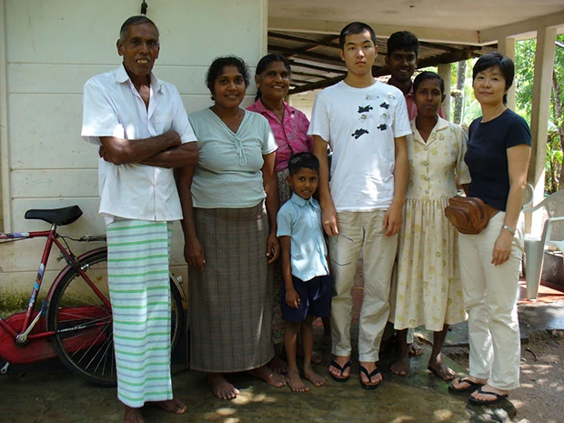
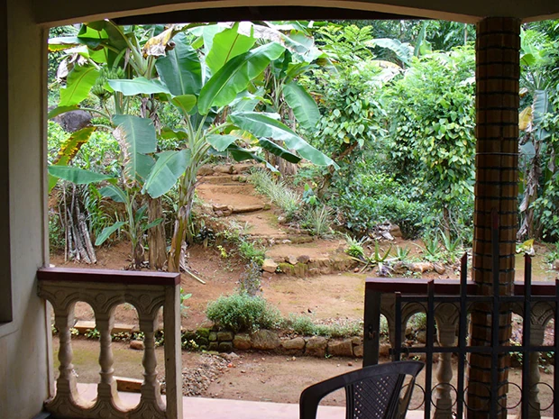

「この留学プログラムに対して、不安や困ったことは特にありませんでした。
強いて言えば、ホストファミリーと英語の先生が同じで、しかも日本語が話せたので甘えが出てしまって、日本語に頼ってしまったという位でしょうか・・・。
また今回は急に、日本の青年と一緒になり低開発村及びキャンディー近くまで行きましたので、日本語でバッチリ会話してしまい・・・ついつい英語から遠ざかったという感じはありました。
この留学プログラムに決めたのは、英語の学習だけでなく、日本語ボランティアや地域ボランティアなどもあって単に観光に終わらず、その国の暮らしを実際に知ることができると思ったことです。
英語のレッスンは、私がビギナー過ぎて、スピードを抑えて話してもらったのでかなり大変だったと思いますが、根気よくつきあって下さいました。
実際に興味のある話題を提供してもらうと、疲れずに自然に質問なども口からでました。宿題は日記（１日さぼりました。）と課題の本を読んで感想を話しあうというものでした。
思ったより時間がとれず７０％位の完了率でしょうか。

スリランカでのホームステイは、とても良い経験ができました。町のスーパーマーケットに一回だけ３０分ほどでかけました・・・。
その後は思ったほど時間がとれず、雨にもたたられ町の散策ができずに残念でしたが、１週間なのであまり欲張ってもね！
マーネル先生はビギナーの私に、根気よくつきって下さり感謝しております。明るく優しくとてもすばらしい先生でした。スリランカの文化や暮らしについても教えてもらえ、大変有意義な滞在でした。
実際に先生が何から何まで一人で・・・・空港の送迎、食事の支度（ホストマザーがたまたま不在のため）、レッスン、案内などのアレンジ、低開発村視察へのみやげ物の買い物、オプション費用の計算と、申し訳ない感じがしました。
帰国時にチェックインが完了するまで、先生が空港で待っていて下さりびっくりしたと同時に安心できました。通常はそこまでしないと思いますので。
低開発村視察は普段知ることのできないことを見たり聞いたり、良い体験ができました。訪問した家族一家は研修後の仕事が上手くいっているとのことでしたし、何より明るく楽しそうで良かったです。
またプランテーションでは植樹のするために、暑い中でシャツをびっしょりさせながらもくもくと穴掘りしてもらったことが印象に残りました。採りたてのココナッツも振舞っていただきました。
５年前にスリランカへ行った時よりも確実に発展していると思いました。空港も新しくなっており車関係の店も増えていて、車やバスやトゥクトゥクがきれいなものが多くなった印象でした。
病院の看板もあちこち見られ、貧富の差も少なくなっているような気がしました。教育も高校、大学まで費用がかからないとのこと、すごいです。知りませんでした。
また仏教、イスラム、ヒンドゥ、キリスト教が混在しそれぞれの歴史のなかから自然と職業も分担されているという・・・とても興味深く思いました。
１週間という大変短い参加でしたが、貴重な体験をさせていただきました。また、スリランカへ行ってみたいと思いますし、またこの留学プログラムをまた利用したいと思います。
やはり１ヶ月位は滞在しないと・・・・思っています。
（是非次回は！） 私の英語の学習は思うように進みませんが、単なる海外旅行でも英語学習でもないこのようなプログラムに、もっと青年達が参加すれば良いと思っています。」